Applications terrain ESRI
Atelier — Colloque du CEF · UQAR, 6 mai 2025
À propos de ce document. Cette page réunit, dans l’ordre chronologique de la présentation, le contenu théorique de l’atelier et les exercices pratiques qui l’entrecoupent.
Les données géospatiales (géodatabases, .aprx, etc.) ne sont pas incluses ici.
Les emplacements marqués « IMAGE À REMPLACER » correspondent à des captures d’écran, logos ou photos susceptibles de poser un problème de droits d’auteur (interfaces ESRI, logos d’applications, photos de produits, etc.). Ce sont des spots vides : chaque légende décrit précisément le visuel attendu, à remplacer par une image dont vous détenez les droits.
Introduction
Présentateurs
Hugues Dorion
- B.Sc. Géographie physique et environnements naturels — U. Laval
- M.Sc. Sciences géographiques — U. Laval
- Technicien forestier & analyste d’images satellitaires et de données spatiales — Ress. Nat. Canada & U. Laval (2014–2020)
- Planteur d’arbres, pompier forestier, abatteur manuel, construction de sentiers, analyste de feux de forêts (2020–2024)
- Professionnel de recherche en télédétection & analyse spatiale — Centre d’étude de la forêt, UQAC (2024–…)
- ✉️ hdorion@uqac.ca
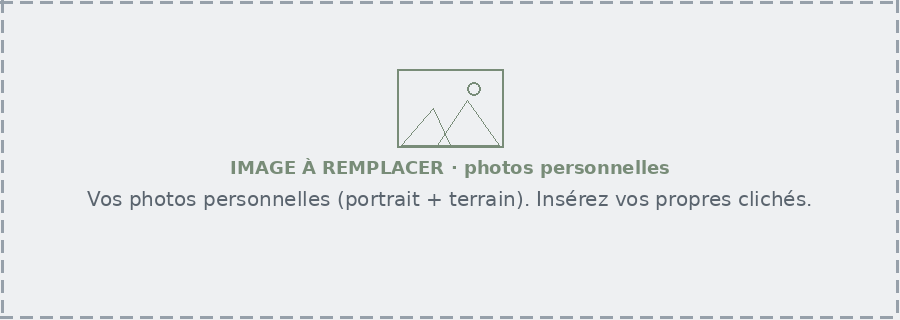
Mélanie Desrochers
- B.Sc. Géographie environnementale — U. de Montréal
- M.Sc. Géographie physique — U. de Sherbrooke
- Professionnelle de recherche, géomatique et conservation — Centre d’étude de la forêt, UQAM (2006–…)
- Chargée de cours — Géographie et architecture du paysage, U. de Montréal (2013–…)
- Bénévole senior — Nature Québec
- ✉️ desrochers.melanie@uqam.ca
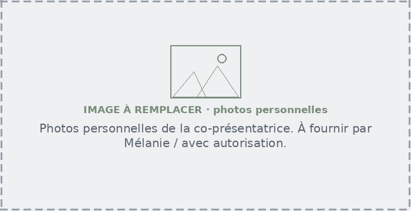
Avant de commencer
ESRI ArcGIS Online — avez-vous votre accès ?
Rendez-vous sur https://www.arcgis.com/index.html et assurez-vous d’avoir un accès à votre organisation ArcGIS Online avant l’atelier.
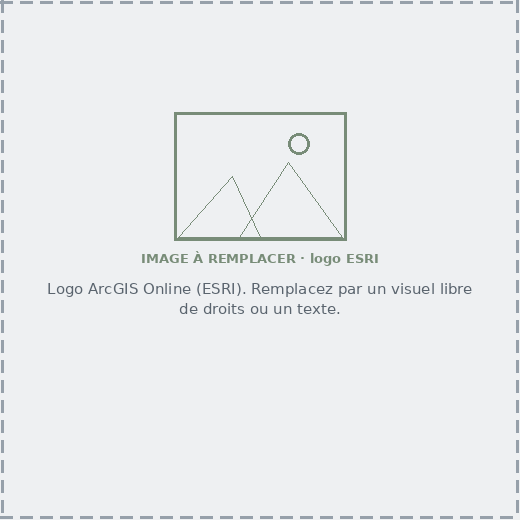
Installer les applications mobiles
Trois applications terrain de la suite ESRI sont utilisées dans l’atelier : QuickCapture, Survey123 et FieldMaps. Installez-les au préalable.
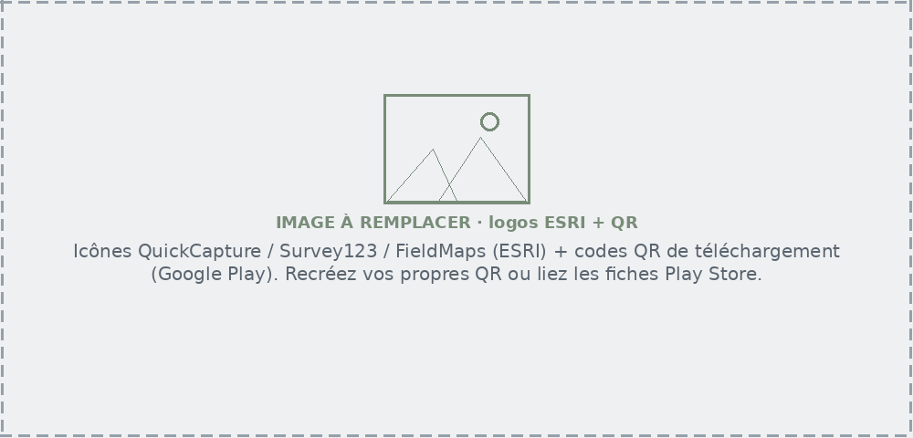
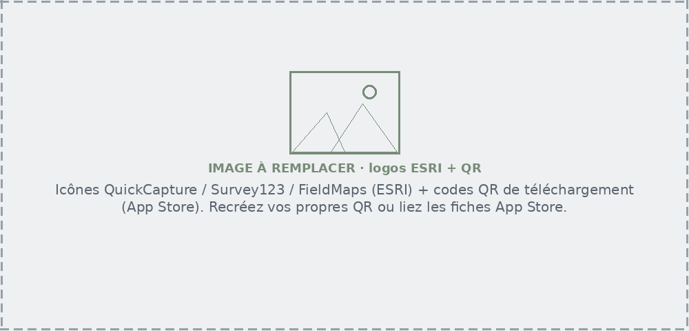
ArcGIS Survey123 Connect (poste de travail)
Module d’édition du formulaire, normalement exécuté avant le terrain sur un ordinateur. Il sert essentiellement à éditer la table Excel form.xlsx sous-jacente au formulaire.
Lien vers le Microsoft Store : apps.microsoft.com/detail/9pmst5c0dlst
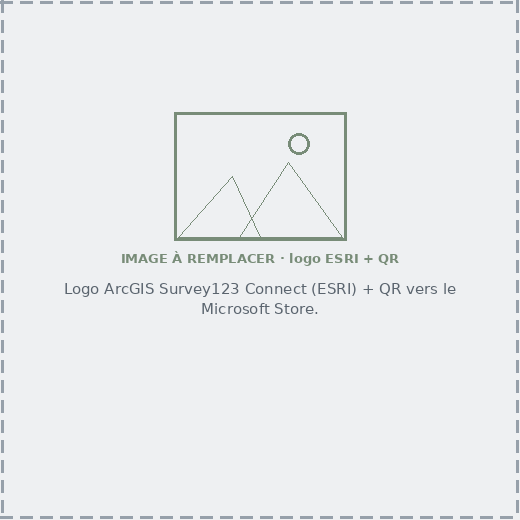
Plan de l’atelier
- Introduction — ArcGIS Online et les applications terrain de la suite ESRI.
- Exercices
- Ex. 1 — ArcGIS Online : création de « feature layers ».
- Ex. 2 — Projet de recherche « Phénologie du sapin baumier ».
- Ex. 3 — Projet de recherche « Inventaire forestier ».
- Temps libre — Tester les applications et/ou construire votre propre application.
Introduction — applications terrain
On distingue les applications selon qu’elles produisent des données spatiales ou non-spatiales — certaines font les deux.
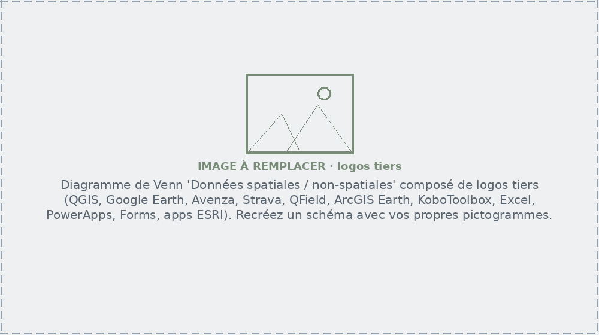
ArcGIS Online et ses applications
ArcGIS Online est la plateforme centrale : les trois applications terrain (QuickCapture, Survey123, FieldMaps) s’y connectent pour lire et écrire les données.
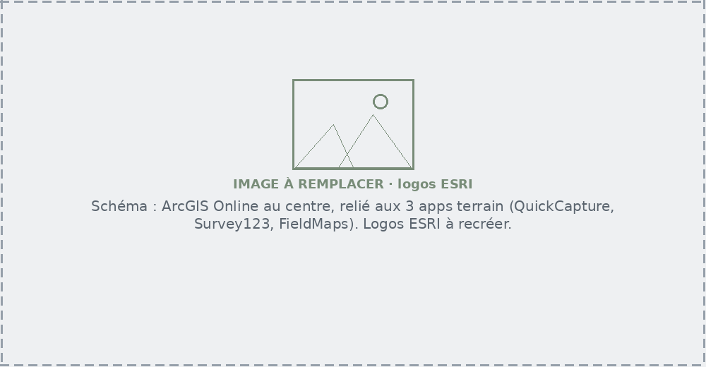
Comparaison des trois applications
| Survey123 | QuickCapture | FieldMaps | |
|---|---|---|---|
| Spatiale ou non-spatiale ? | Les deux | Spatiale (implicitement) | Spatiale (explicitement) |
| À quoi ça ressemble ? | Remplir des formulaires qui peuvent être complexes | Saisie rapide, souvent à l’aide de « gros boutons » | Saisie directement sur une carte, avec les fonctionnalités d’un SIG |
| Édition de données existantes | Oui | Non | Oui |
| Édition simultanée de plusieurs couches d’entités | Non | Oui | Non |
| Numérisation d’entités linéaires et surfaciques (ex. enregistrer un chemin) | Non (mais oui aussi) | Oui | Oui |
L’univers d’ArcGIS Online
Tour d’horizon de l’interface d’ArcGIS Online et de ses onglets principaux.
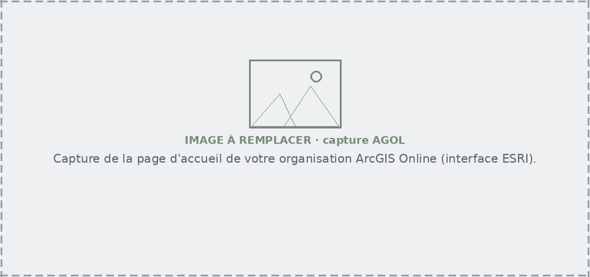
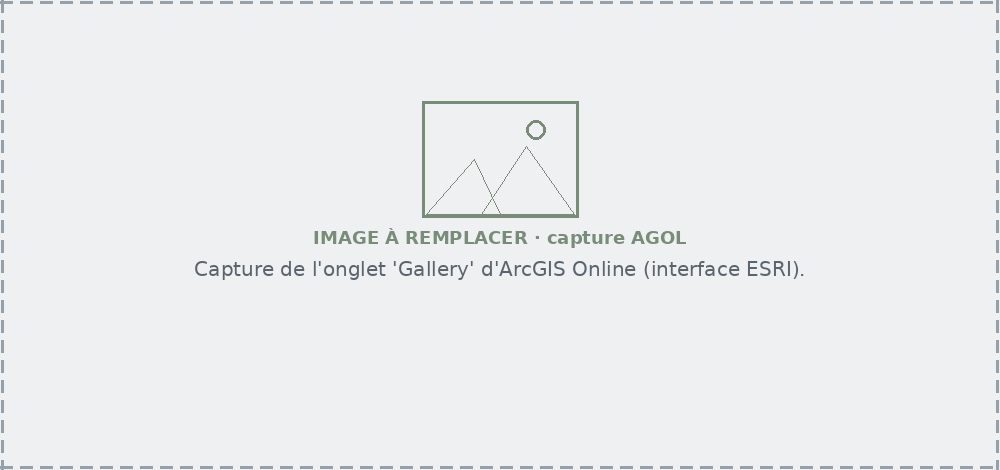
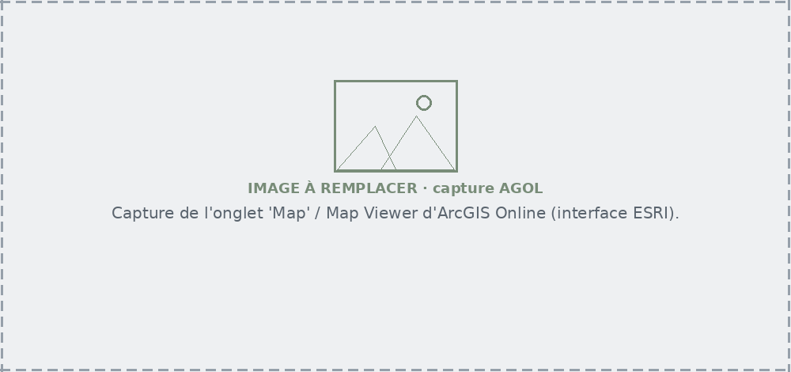
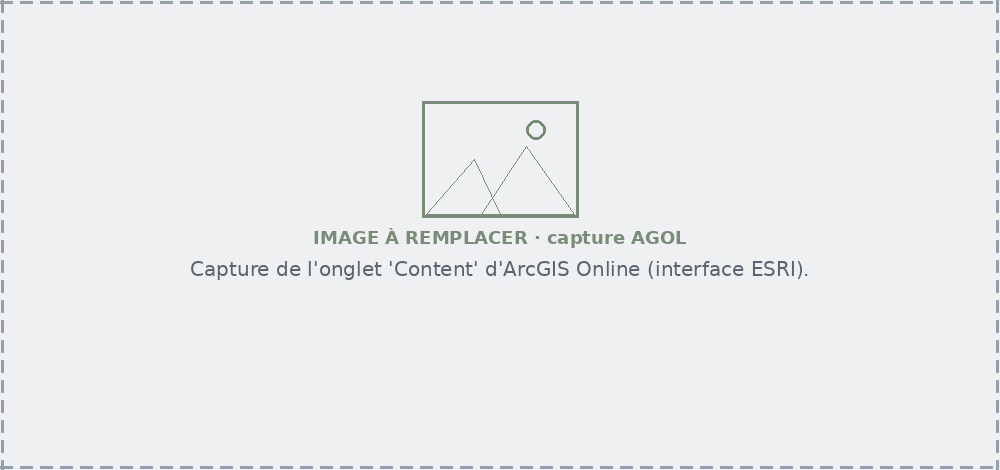
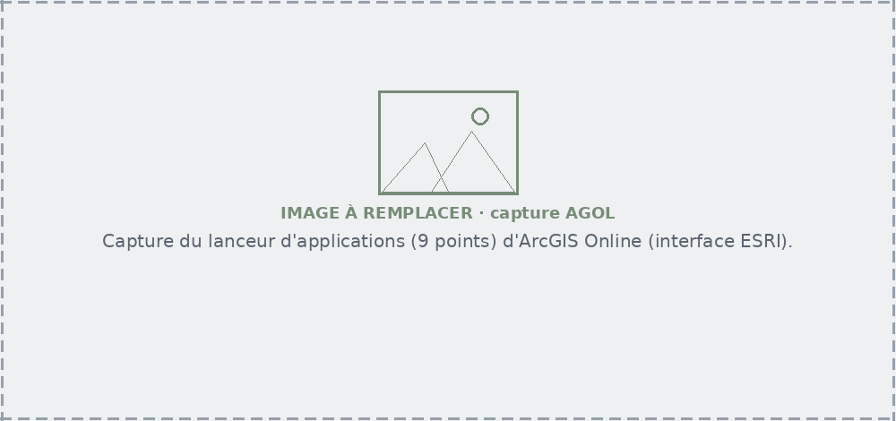
Questions ? — C’est le bon moment pour clarifier l’organisation d’ArcGIS Online avant de passer aux exercices.
Exercice 1 — Création de « feature layers »
Concept : Feature Class vs Feature Layer
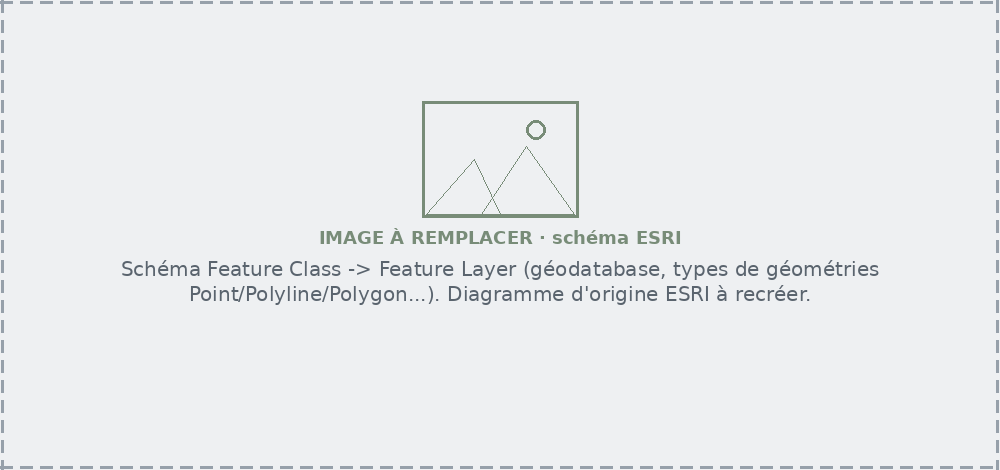
- La donnée est stockée sous forme de Feature Class.
- Lorsqu’elle est affichée dans une Map, en ligne, etc., elle devient un Feature Layer, avec une symbologie, un zoom, etc.
- Un même Feature Class peut donc être lié à plusieurs Feature Layers, et chacun peut être sauvegardé séparément (Save as Layer file).
Ouvrir le fichier Ex1_CreationFeatureLayer — l’exercice ci-dessous en reprend l’intégralité du contenu.
Énoncé de l’exercice
L’objectif de cet exercice est de vous familiariser avec l’univers d’ArcGIS Online et ses fonctionnalités quant à la création de couches d’entités (feature layers). L’exercice couvre la création d’une couche d’entités mais aussi la « bonne conduite » en matière de gestion de données dans ArcGIS Online. La couche d’entités créée ici servira à l’exercice 3. Pour le reste de l’atelier, nous utiliserons le terme « feature layer ».
Fichiers nécessaires : fichier MS Excel Base_donnee_Ex1_Ex3.xlsx.
Étapes
1) Créer un « feature layer » dans ArcGIS Online
- Ouvrir une page web et se connecter à son profil ArcGIS Online : https://www.arcgis.com/index.html.
- Cliquer sur l’onglet Content et créer un dossier dans lequel le feature layer sera enregistré. L’appeler
Exercice_1.
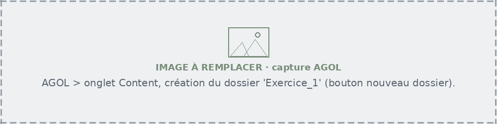
Exercice_1.- Une fois le dossier
Exercice_1créé, y entrer (il est vide) et cliquer sur New Item.
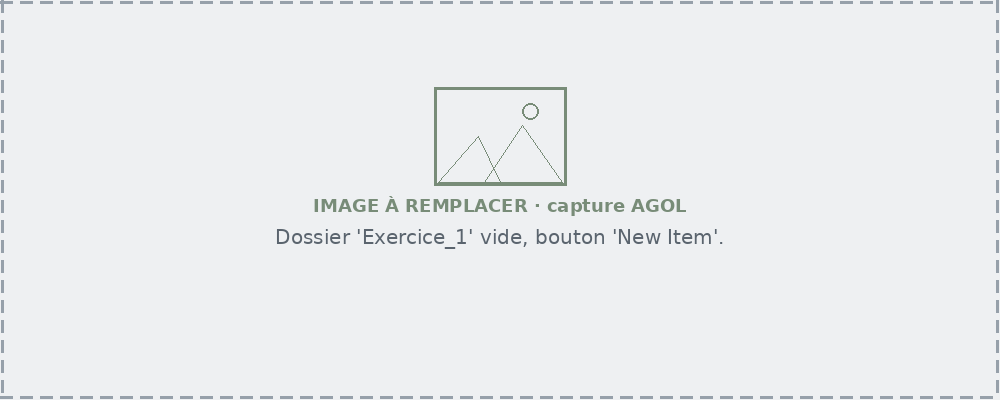
Exercice_1 vide → bouton New Item.- Choisir l’option Feature layer.
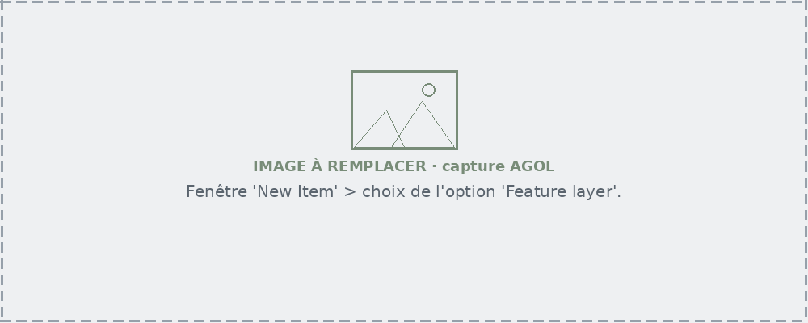
- Cliquer sur Define your own layer, puis sur Next.
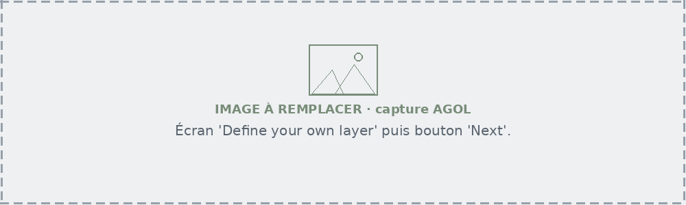
Le menu Create a feature layer s’ouvre et permet de créer l’ensemble des feature class nécessaires au projet. Pour cet exercice, créer 4 couches supplémentaires avec les noms et topologies suivants :
Donnee_generale(point)Inv_forestier(point)Chemin_acces(ligne)Contour_placette(polygone)
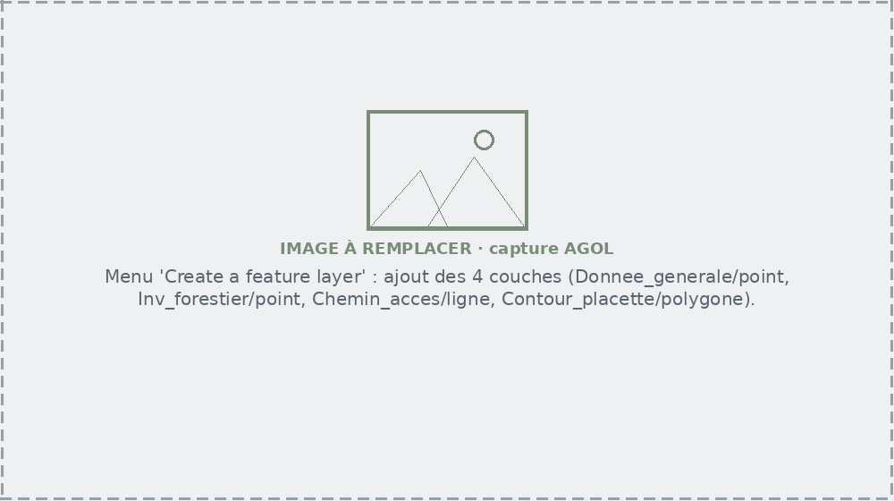
- Une fois la saisie des couches complétée, cliquer sur Next. Donner le nom
Placette_inv_CN2025au feature layer et l’enregistrer dans le dossierExercice_1.
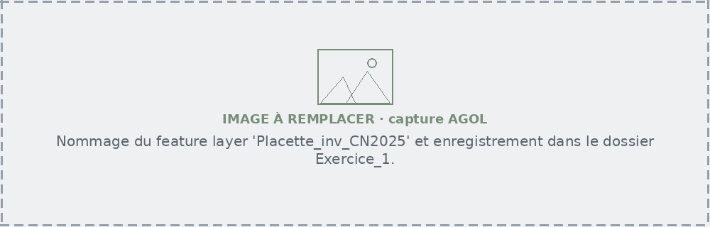
Placette_inv_CN2025 et enregistrement dans le dossier Exercice_1.- Le nouveau feature layer est créé : c’est dans cette fenêtre contextuelle que vous complétez la description du fichier. Si le fichier doit être partagé, ajoutez un maximum d’informations afin que les autres utilisateurs comprennent bien les tenants et aboutissants du feature layer.
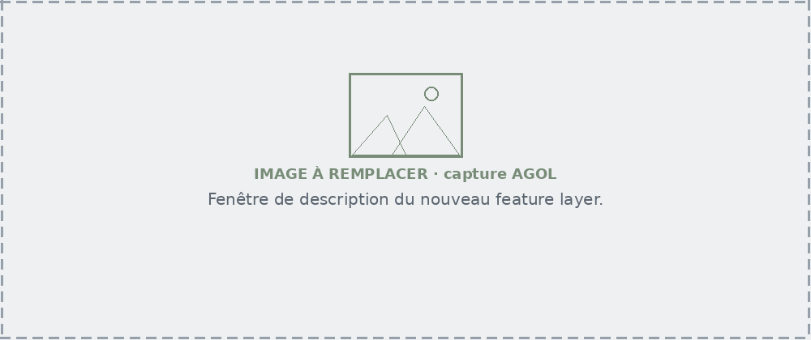
2) Configuration d’un « feature layer »
Un fichier MS Excel vous a été fourni : consultez-le pour connaître les champs à créer dans chaque classe d’entités. Chaque feuille/onglet du fichier Excel correspond à une couche du feature layer (voir Base_donnee_Ex1_Ex3.xlsx).
- Dans l’onglet Data, cliquer sur Fields.
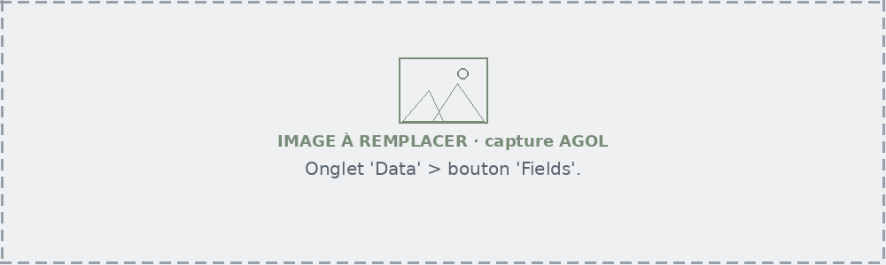
- Pour ajouter de nouveaux champs, cliquer sur + Add.
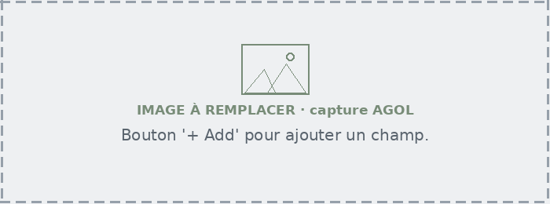
- Ajouter l’ensemble des champs inclus dans la base de données fournie. Pour chaque nouveau champ, cliquer sur + Add jusqu’à obtenir la liste complète.
Référence des champs (feuille Metadonnee du fichier Excel) :
| Couche | Champ | Nom | Type | Longueur | Description |
|---|---|---|---|---|---|
| Donnee_generale | ID_placette |
Identifiant placette | Texte | 25 | Identifiant unique de chaque placette |
| Donnee_generale | Date_inv |
Date de l’inventaire | Date | — | Date de l’inventaire (sans les heures) |
| Donnee_generale | X_p |
Longitude | Double | — | Coordonnée géographique |
| Donnee_generale | Y_p |
Latitude | Double | — | Coordonnée géographique |
| Donnee_generale | Altitude |
Altitude | Double | — | Altitude GPS |
| Donnee_generale | Aspect |
Aspect (exposition) | Double | 25 | Exposition de la pente |
| Inv_forestier | ID_placette |
Identifiant placette | Texte | 25 | Identifiant unique de chaque placette |
| Inv_forestier | Ess_arbre |
Essence d’arbre | Texte | 50 | Nom de l’espèce d’arbre |
| Inv_forestier | DHP |
DHP | Double | — | Diamètre à hauteur de poitrine |
| Inv_forestier | Nv_defo |
Niveau de défoliation | Entier | — | Défoliation par la TBE (0 = 0 % ; 1 = <25 % ; 2 = 25–50 % ; 3 = >50 %) |
| Chemin_acces | ID_placette |
Identifiant placette | Texte | 25 | Identifiant unique de chaque placette |
| Contour_placette | ID_placette |
Identifiant placette | Texte | 25 | Identifiant unique de chaque placette |
3) Créer une liste dans un champ
- Cliquer sur le champ
Ess_arbrecréé à l’étape précédente.
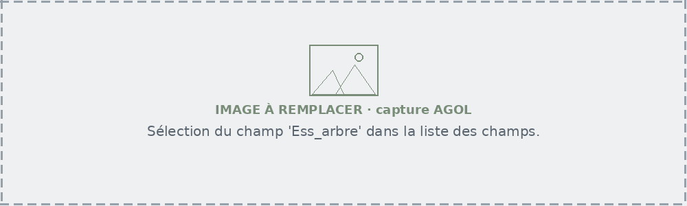
Ess_arbre.- Cliquer sur Create list.
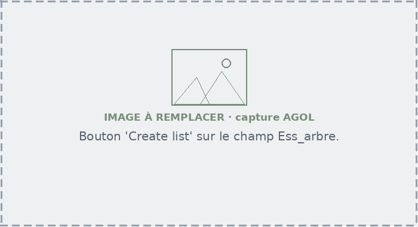
- Saisir l’ensemble des espèces ligneuses à inventorier. Une fois la liste complète, sauvegarder la liste.
Étapes facultatives — mise en style cartographique
- Cliquer sur l’onglet Visualization afin de passer en mode d’affichage cartographique du feature layer
Inv_forestier.
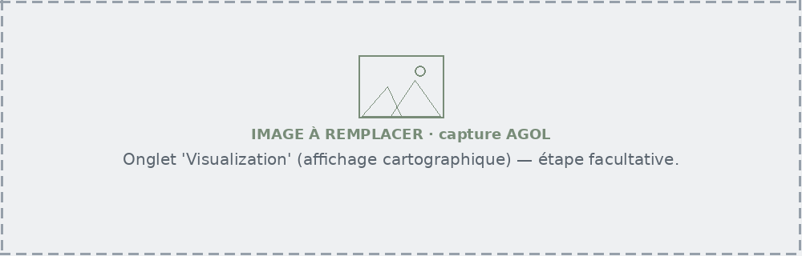
Pour afficher les options de la couche
Inv_forestier, cliquer sur Layers dans le menu de gauche, puis sur la coucheInv_forestier(les options apparaissent dans le menu de droite).Dans l’onglet Styles, choisir + Field et sélectionner le champ
Ess_arbre(qui contient la liste d’espèces ligneuses).Dans la section 2 - Pick a style, cliquer sur Style options et modifier la couleur des 3 symboles. Cliquer sur Done, puis Save pour conserver les modifications.
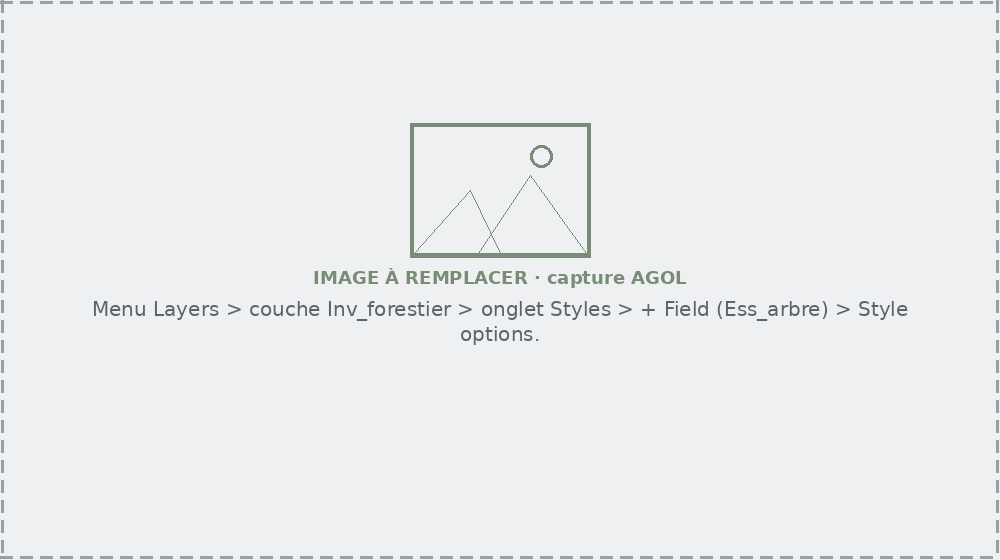
Inv_forestier → onglet Styles → + Field (Ess_arbre) → Style options.- Retourner dans votre contenu ArcGIS Online : le feature layer doit se trouver dans le dossier
Exercice_1.
Questions ?
Exercice 2 — Phénologie du sapin baumier
ESRI FieldMaps & Survey123 — Parc national du Bic.
Contexte et objectifs
| Objectif | Étapes préliminaires | Méthode |
|---|---|---|
| Dans le Parc national du Bic, étudier la phénologie du sapin baumier dans des peuplements résineux à dominance de sapin baumier. | 1. À partir du plan de sondage, 7 sapinières ont été identifiées à échantillonner. 2. Dans chaque sapinière, sélectionner 3 individus de sapin baumier sur lesquels une sonde de température et une caméra seront installées ; mesurer le DHP et la hauteur de chaque arbre. 3. Créer un formulaire pour suivre les changements de batteries / cartes SD des caméras et des sondes en cours de saison. | 1. Visualiser le plan de sondage dans ArcGIS Pro et envoyer les données vers ArcGIS Online. 2. Intégrer le plan de sondage et créer un formulaire (feature class) dans FieldMaps Designer. 3. Dans Survey123, créer un formulaire simple de suivi (batteries, cartes SD, sondes). |
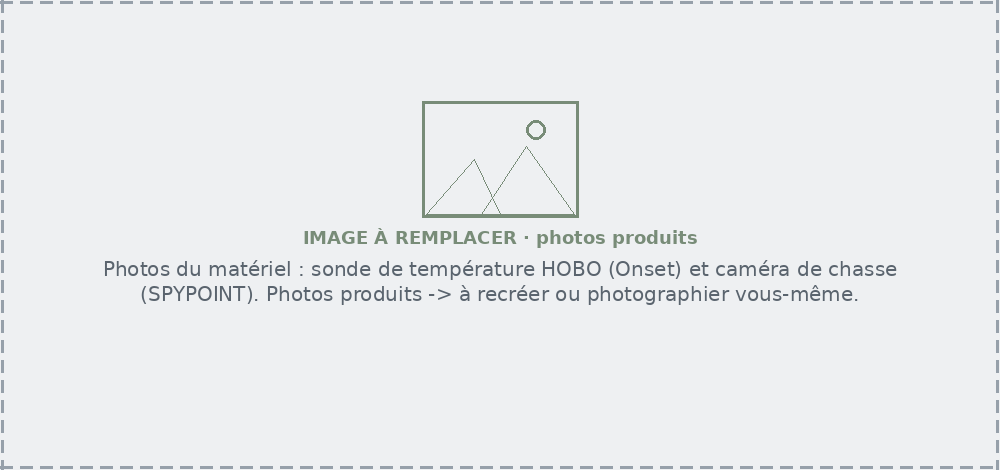
Énoncé de l’exercice
Dans ce deuxième exercice, on vous demande d’abord d’intégrer dans un projet ArcGIS FieldMaps votre plan de sondage créé dans ArcGIS Pro (une géodatabase vous est fournie), puis de créer un nouveau formulaire d’acquisition de données géospatiales dans FieldMaps Designer pour la saisie de données explicitement géospatiales sur le terrain.
Le plan de sondage nous guide vers les sites sélectionnés en laboratoire, où l’on collecte ensuite des données ponctuelles et linéaires. Enfin, Survey123 sert à créer un formulaire simple pour le suivi des échantillonnages en cours de saison.
Mise en contexte. Dans le cadre de votre projet de recherche, vous suivez le débourrement du sapin baumier dans le Parc national du Bic. Un plan de sondage de 7 sites potentiels (peuplements à dominance de sapin baumier) est déjà préparé.
Lors de la première séquence de travail terrain, vous devez, dans chacun des 7 sites, trouver 3 individus de sapin baumier sur lesquels vous installez une sonde de température « HOBO » (identifiant unique) et une caméra de chasse permettant de voir les bourgeons. La carte SD de chaque caméra possède aussi un identifiant unique. Chaque arbre sélectionné doit être mesuré (DHP et hauteur), géolocalisé, et ces données compilées dans un formulaire.
Ensuite, le chemin d’accès au site doit être cartographié de la route jusqu’à chacun des 3 arbres, afin de spatialiser votre circuit pour les visites de suivi. Le formulaire de suivi (changements de cartes SD et de sondes « HOBO ») doit inclure l’identifiant unique de chaque sonde et de chaque carte SD, ainsi que la date de changement pour les 3 individus.
Fichiers nécessaires : point de sondage (Ex2.gdb) et polygone écoforestier clip (Ex2.gdb).
Étapes
1) Créer un dossier « Exercice_2 » dans ArcGIS Online
- Se connecter à ArcGIS Online : https://www.arcgis.com/index.html.
- Onglet Content → créer un dossier
Exercice_2.
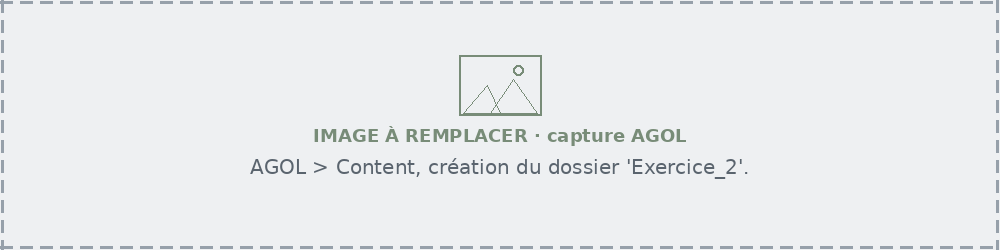
Exercice_2.2) Ouvrir ArcGIS Pro et importer les données de la géodatabase
Importer / visualiser les données :
- Dans ArcGIS Pro, créer un nouveau projet
Exercice_2dans un répertoire de votre choix sur leC:/. - Dans une nouvelle Map, ajouter les deux couches de la géodatabase
Ex2.gdb(dézippée) via Add data, puis visualiser les données. - Sélectionner les deux couches en maintenant CTRL enfoncé — les deux couches doivent être en surbrillance.
- Dans ArcGIS Pro, créer un nouveau projet
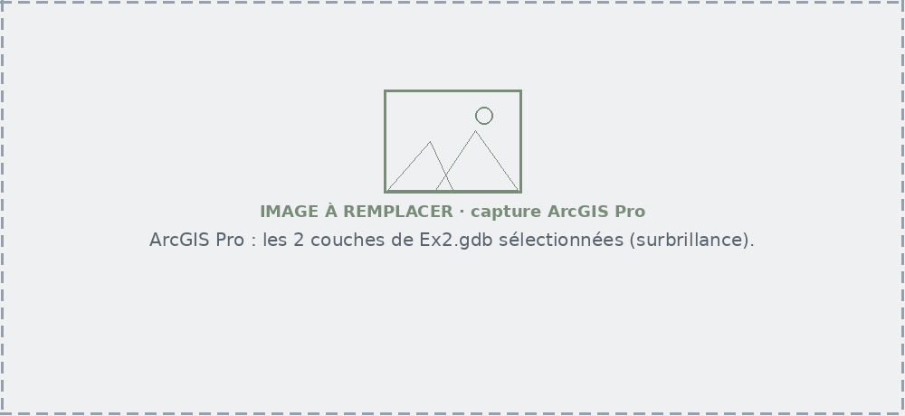
Ex2.gdb en surbrillance.- Clic droit sur l’une des couches en surbrillance → Share as web layer. Dans le panneau de droite, indiquer Name =
Ex2_layerset, sous Location, choisir le dossierExercice_2créé dans ArcGIS Online.
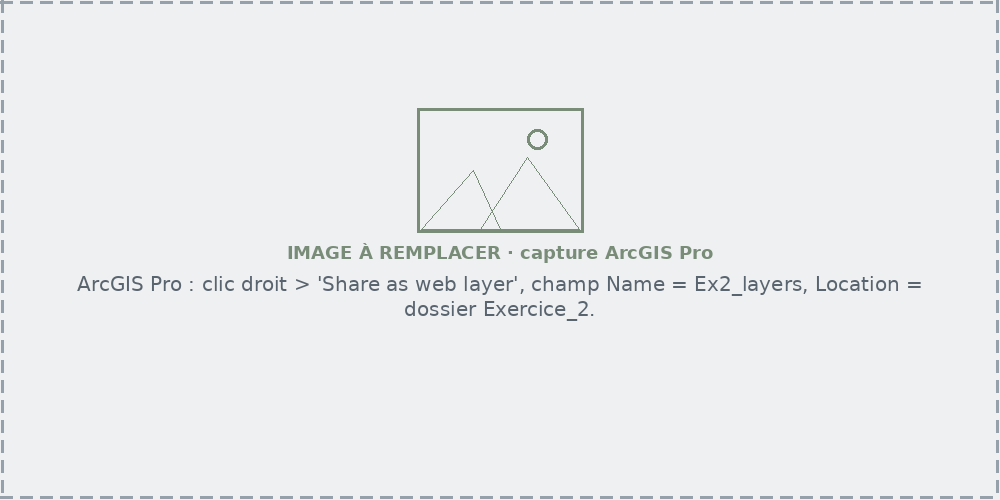
Ex2_layers, Location = Exercice_2).- Cliquer sur Analyze puis Publish pour envoyer les couches vers votre contenu ArcGIS Online.
3) Créer une « Web map » avec les données
- Dans ArcGIS Online / Content, cliquer sur le feature layer
Ex2_layerset l’ouvrir dans le Map Viewer.
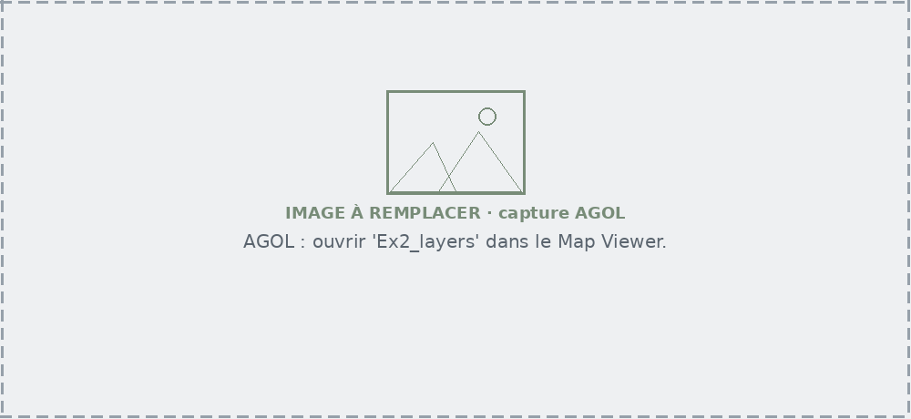
Ex2_layers dans le Map Viewer.- Une fois le Map Viewer ouvert, enregistrer la carte dans le dossier
Exercice_2sous le nomSaisie_donnee_Bic.
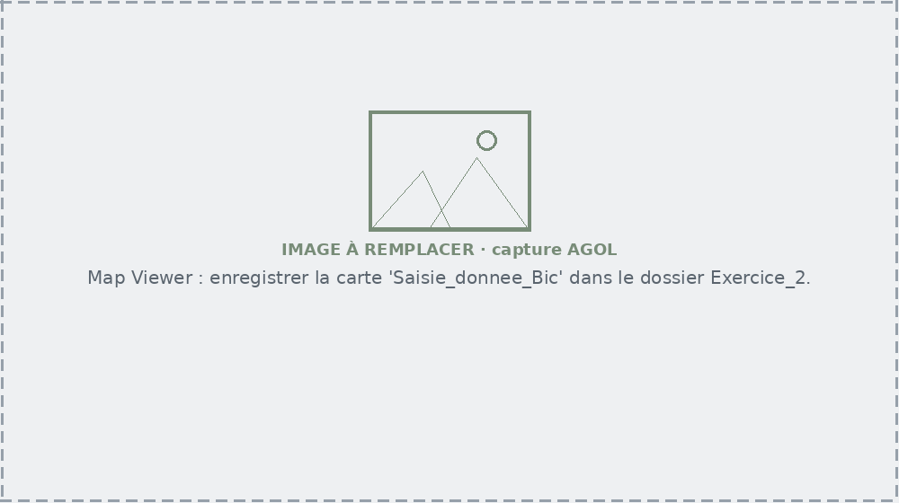
Saisie_donnee_Bic dans Exercice_2.- De retour dans le contenu du dossier
Exercice_2, cliquer sur la Web Map créée et l’ouvrir dans Field Maps Designer.
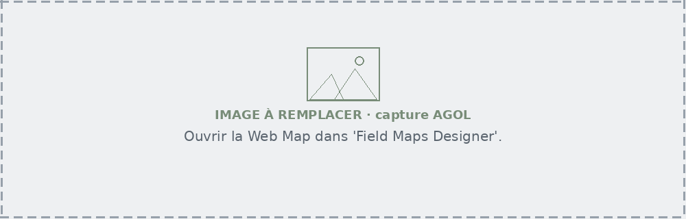
4) Créer un nouveau formulaire dans « Field Maps Designer »
- Dans le bandeau de gauche, sélectionner l’onglet Forms, cliquer sur la flèche à droite de Add Layer, puis choisir Create layer.
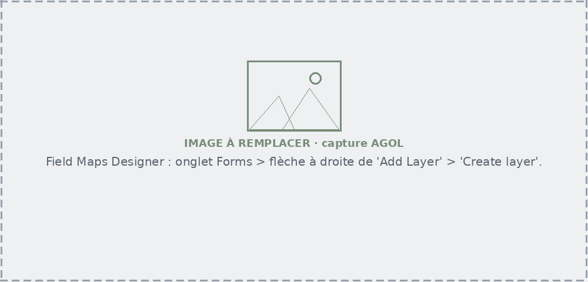
Sous Layer name :
- Inscrire
Info_arbre_sondeen conservant Layer type = Point Layer. - Cliquer sur le + pour ajouter une seconde couche
Chemin_accesde type Line layer.
- Inscrire
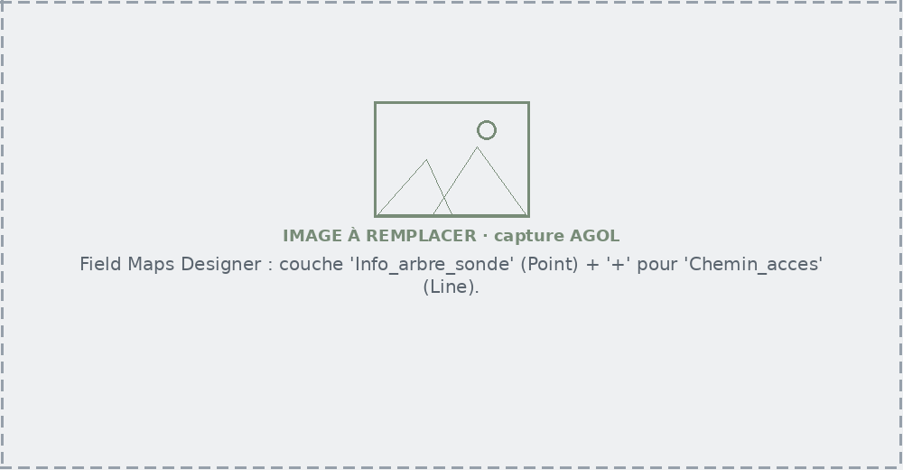
Info_arbre_sonde (Point) + ajout de Chemin_acces (Line).- Avant la sauvegarde finale des 2 couches, donner le nom
Donnee_terrain_Bic_2025au feature layer qui contient les 2 couches.
Sélectionner le même dossier Exercice_2.
5) Création du formulaire pour chacune des deux couches
- Créer un formulaire pour chaque couche (la structure des données à recueillir sur le terrain). Utiliser les informations du descriptif du projet. Pour cela, sélectionner le type d’élément voulu dans le bandeau de droite et le glisser, dans l’ordre voulu, au centre.
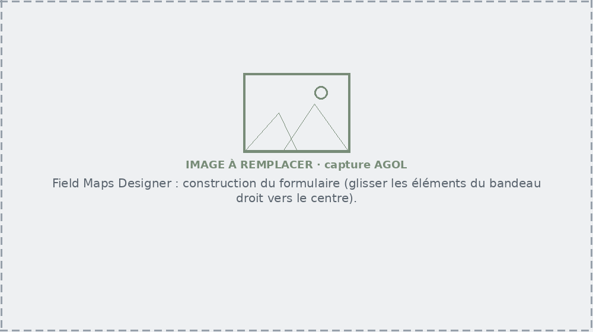
Liste des champs voulus pour la couche
Info_arbre_sonde:- Identifiant de la placette
- Date — le nom du champ doit être différent de « Date » (mot réservé)
- Identifiant de l’arbre (menu déroulant avec 5 noms prédéfinis)
- Diamètre à hauteur de poitrine (DHP)
- Hauteur de l’arbre
- Identifiant de la sonde HOBO
- Identifiant de la carte SD
Pour la couche
Chemin_acces, seul un champ qui répète l’identifiant de la placette est nécessaire.
6) Ouvrir la carte et saisir des données
Cliquer sur Sharing dans le bandeau de gauche, puis utiliser le code QR et l’appareil photo de votre cellulaire pour ouvrir la carte dans FieldMaps.
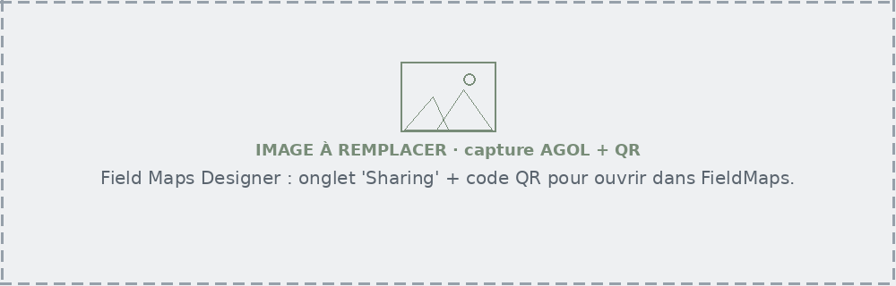
7) Acquisition de données dans votre projet FieldMaps !
Il est important d’éteindre la fonction GPS de votre cellulaire pour cet atelier.
8) Partie 2 — Formulaire de suivi (sondes « HOBO » et cartes SD)
- Retourner dans ArcGIS Online et cliquer sur Survey123 dans le lanceur d’applications (les 9 petits points).
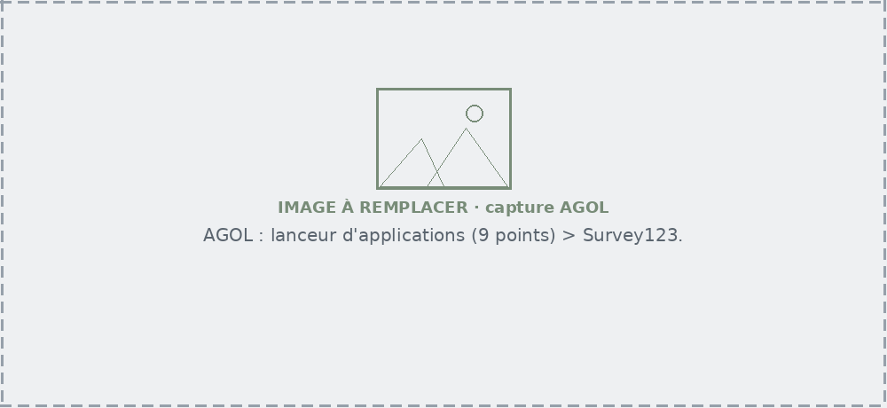
- Dans ArcGIS Survey123, cliquer sur + New survey…
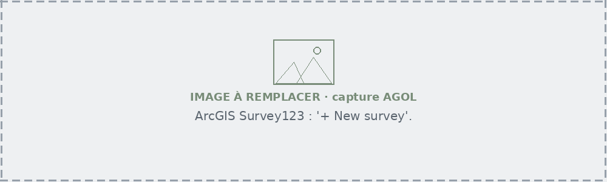
…puis sélectionner Blank Survey.
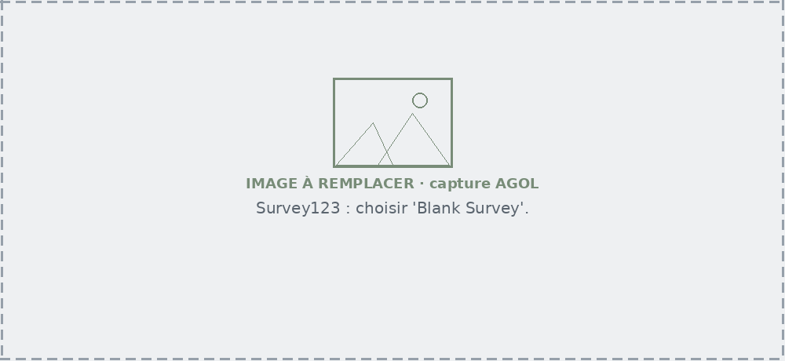
Dans Survey123, créer un formulaire non spatial qui permettra de suivre les changements de sondes « HOBO » et de cartes SD tout au long de la saison.
Avant de commencer l’édition, cliquer dans l’entête pour :
- Donner un nom à votre formulaire (au fichier).
- Donner un titre au formulaire.
- Ajouter une description qui facilitera la compréhension du formulaire.
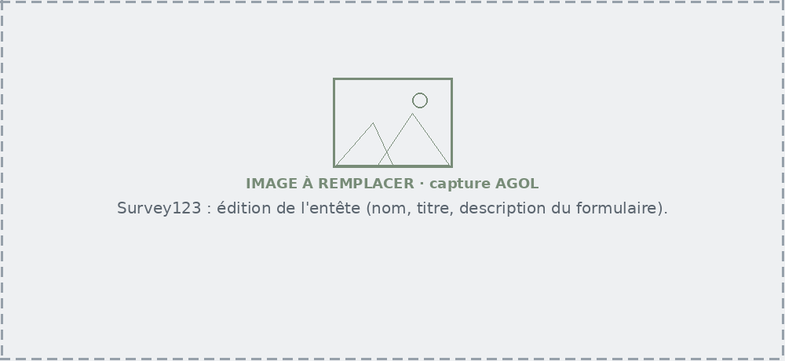
- Monter le formulaire, puis cliquer sur Publish.
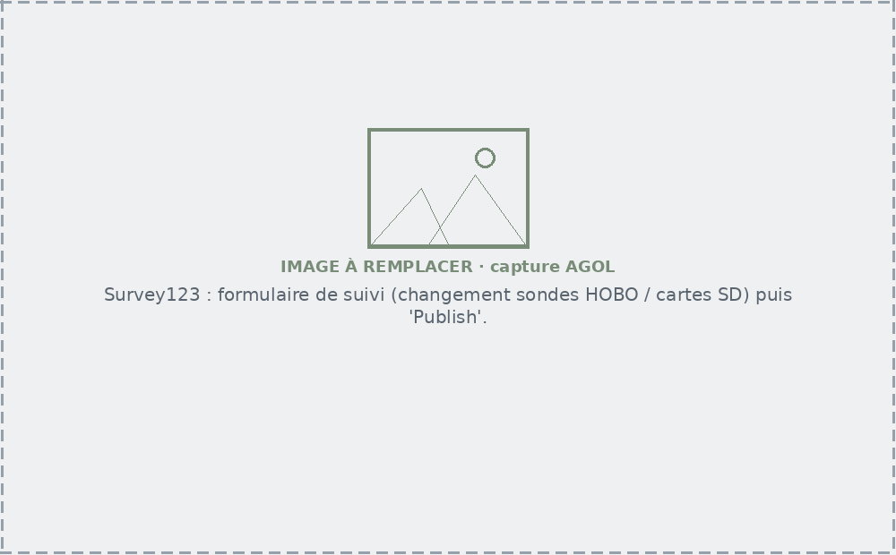
- Une fois publié, il est accessible via l’application mobile Survey123. Il est aussi possible d’enregistrer le code QR qui redirige vers l’application.
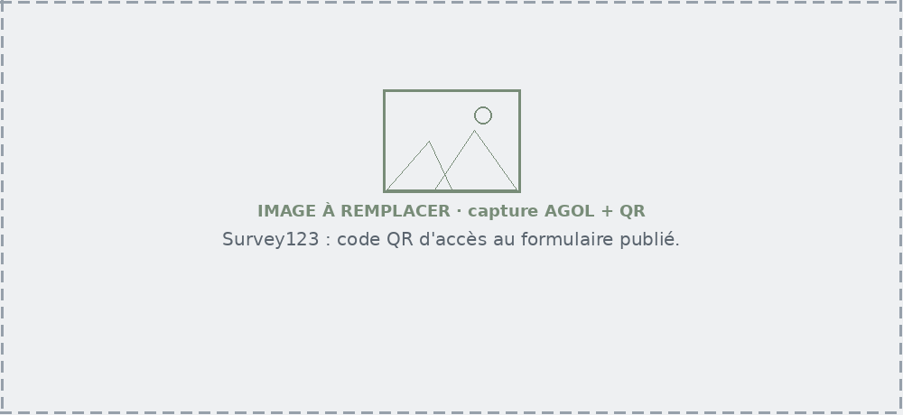
- Démonstration directement sur l’application !
- Visualiser / exporter les données dans la table.
Questions ?
Exercice 3 — Inventaire forestier
QuickCapture & Survey123 — Côte-Nord, dommages de la TBE (tordeuse des bourgeons de l’épinette).
Contexte et objectifs
| Objectif | Étapes préliminaires | Méthode |
|---|---|---|
| Sur la Côte-Nord, évaluer les dommages causés par la TBE sur ses 3 espèces-hôtes. Dans une placette de 1 ha, inventorier l’ensemble de ces arbres (sapin baumier, épinette noire, épinette blanche) et évaluer leur niveau de défoliation. | 1. Dans une placette de 100 m × 100 m, géolocaliser l’ensemble des hôtes de la TBE et évaluer leur niveau de défoliation. 2. Pour chaque arbre : coordonnée XY, DHP, niveau de défoliation cumulée. 3. Numériser un chemin d’accès vers la placette et tracer son périmètre (empreinte générale de la placette). | 1. Création de feature layers dont les champs serviront à générer un formulaire QuickCapture. 2. Ex. 3a : paramétrage du formulaire QuickCapture (règles de validation, types de boutons). 3. Ex. 3b : Survey123 & Survey123 Connect — créer un formulaire d’inventaire similaire, où les arbres ne sont pas géolocalisés. |
Ouvrir les fichiers Ex3a_Inventaire_forestier et Ex3b_Inventaire_forestier — repris intégralement ci-dessous.
Énoncé général
On vous demande de créer un formulaire QuickCapture qui permet la collecte de données ponctuelles, linéaires et surfaciques dans une même application. Dans ce projet, vous connaissez la localisation du peuplement à échantillonner, mais pas encore celle des arbres ni du centre exact de la placette. Vous savez où stationner le long du chemin, mais le chemin d’accès n’est pas encore tracé.
Partie 1 — QuickCapture. Utiliser le feature class créé à l’exercice 1 pour générer et configurer une application ArcGIS QuickCapture dans laquelle :
- la 1re section compile les données générales de la placette : identifiant, coordonnées XY, date, altitude, orientation de la pente (aspect) ;
- la 2e section géolocalise les arbres et compile les données d’inventaire des espèces susceptibles à la TBE (dont DHP et niveau de défoliation) ;
- la 3e section numérise le chemin d’accès (ligne) et le contour de la placette (polygone).
Partie 2 — Survey123. En inventaire forestier, il n’est pas toujours nécessaire de géolocaliser individuellement les arbres si l’on s’intéresse plutôt au volume de bois ou à la surface terrière par espèce à l’échelle du peuplement (comme dans la carte écoforestière). Nous verrons comment remplacer les sections « données générales » et « inventaire des arbres » de QuickCapture par un formulaire créé dans Survey123. Au terme de l’exercice, il sera possible de comparer les avantages de chaque application pour un inventaire forestier.
Partie 1 — QuickCapture (Ex. 3a)
Fichiers nécessaires : Placette_inv_CN2025 (feature layer de l’exercice 1) — couches Donnee_generale, Inv_forestier, Chemin_acces, Contour_p.
1) À partir de votre compte ArcGIS Online
A. Créer un nouveau dossier Exercice_3. Aller dans le dossier Exercice_1 et copier son contenu dans Exercice_3. B. Ouvrir le lanceur d’applications (9 petits points) et lancer QuickCapture.
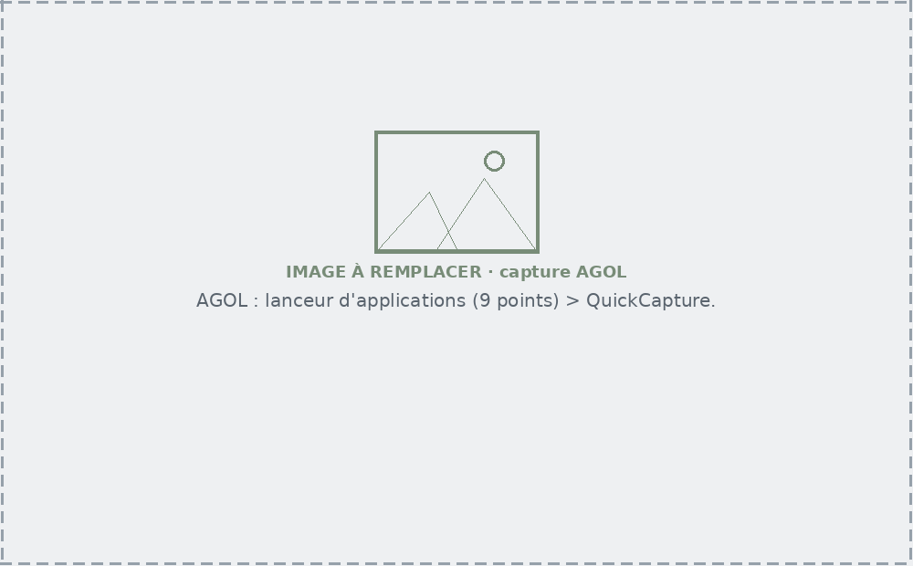
C. Dans ArcGIS QuickCapture app Designer, cliquer sur + New Project puis Start from existing layers.
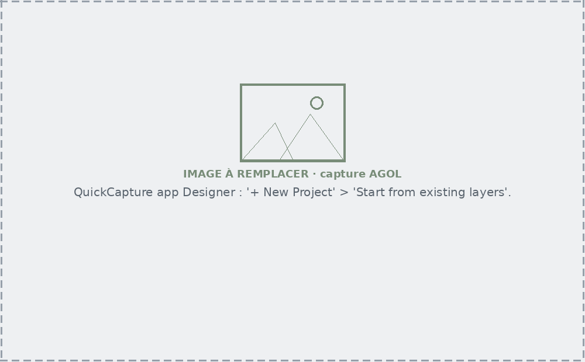
D. Sous My layers, sélectionner le feature layer créé à l’exercice 1 : Placette_inv_CN2025. Dans la fenêtre contextuelle en bas de page, s’assurer que Create buttons from layer symbology est sélectionné, puis cliquer sur Next.
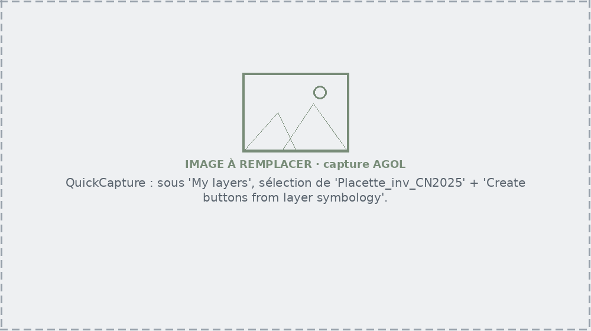
Placette_inv_CN2025 + Create buttons from layer symbology.E. Dans la fenêtre Create Project, donner le titre Inventaire_TBE_2025 et enregistrer le projet dans le dossier Exercice_3 (plutôt que Root).
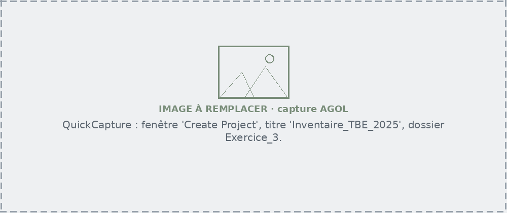
Inventaire_TBE_2025, dossier Exercice_3).2) Éléments du ArcGIS QuickCapture Designer
L’énumération suivante fait référence à l’image ci-dessous.
A. Messages — messages d’erreur et avertissements. Prenez le temps de les lire et de les comprendre ! Il est impossible de sauvegarder l’application tant que des messages d’erreur sont actifs. B. Paramètres de l’application
- Type d’appareil sur lequel l’application sera utilisée (meilleure disposition des boutons).
- Paramètres généraux : couleur d’arrière-plan, tolérance GPS, taille des photos.
- Manage project layer — modifier le(s) feature layer(s) utilisé(s).
- Configure map project.
- Additional settings : Project details, Project user inputs, Button user inputs, etc.
C. Section pour paramétrer chacun des boutons de saisie. D. Aperçu de l’application finale.
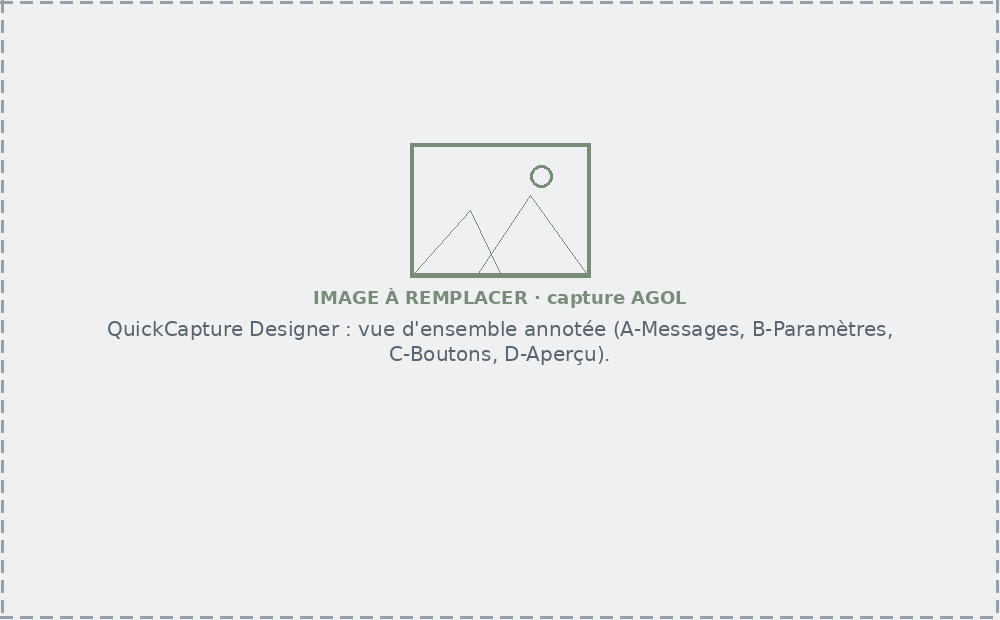
3) Configurer l’application — paramètres généraux et additionnels
A. Régler l’affichage selon l’appareil utilisé lors de la campagne d’échantillonnage. B. Dans les paramètres généraux, choisir une couleur de fond. C. Dans l’onglet Map, conserver le fond de carte par défaut (Topographic). D. Dans Additional settings → Project details :
- Modifier le titre (enlever les underscores) ;
- Valider l’adresse courriel de référence ;
- Ajouter une description (surtout si d’autres personnes utiliseront l’application).
4) Configurer les sections de l’application
A. Cliquer directement sur le nom de chaque section pour configurer son apparence :
- Sous Label, renommer en « Données générales » ;
- Conserver une seule colonne ;
- Enlever l’option Make group collapsible ;
- Mettre une couleur de bordure apparente par rapport au fond choisi ;
- Répéter pour les 4 sections. Pour le groupe « Inventaire forestier », mettre 3 colonnes.
5) Configurer les boutons et la saisie de données
A. Groupe « Données générales » — section Appearance
- Cliquer sur le bouton New Feature pour ouvrir le menu de droite.
- Sous Label, définir le texte affiché sous le bouton : « Coordonnées au centre de la placette ».
- Régler taille, forme, couleur, bordure et icône du bouton.
B. Groupe « Données générales » — section Data
- Cette section configure les actions du bouton.
- Valider le Target feature layer (devrait être
Donnee_generale). - Capture mode : Single point. Ne pas activer Show map after capture ni Show camera.
- Capture fields : 1.
ID_placette: dans le menu déroulant Project user inputs, créer un nouveau Project user input nommé « Identifiant unique de la placette », de type Single line text, avec This is a required user input activé. Activer aussi Apply hint et inscrire « Format requis : P001 ». 2. Les champsX_p,Y_p,Altitude,AspectetDate_invdoivent tous être des Device variables. 3. Pour chacun, sélectionner le type de donnée correspondant dans le menu déroulant de droite. 4. Explication : à l’ouverture, l’application demande automatiquement l’identifiant unique de la placette (avec exemple de format). Ce champ implémenteID_placettedans chacun des feature layers.
C. Groupe « Inventaire forestier »
- Appearance — Label : « Sapin baumier » ; Colors : vert foncé ; Image : icône d’arbre.
- Data : 1. Valider le Target feature layer. 2.
ID_placette: Project user inputs → Identifiant unique. 3.Ess_arbre: sélectionner « Sapin baumier » dans le menu déroulant. 4.DHP: Button user inputs → « Diamètre à hauteur de poitrine », required user input, End of capture → Create. 5.Nv_defo: Button user inputs → « Niveau de défoliation », required user input, End of capture → Create. 6. Explication :ID_placetteest rempli automatiquement par le Project user input ; « Sapin baumier » est inscrit automatiquement dansEss_arbre;DHPetNv_defosont ensuite remplis par des fenêtres contextuelles successives. - Pour créer le prochain bouton, utiliser la fonction Duplicate.
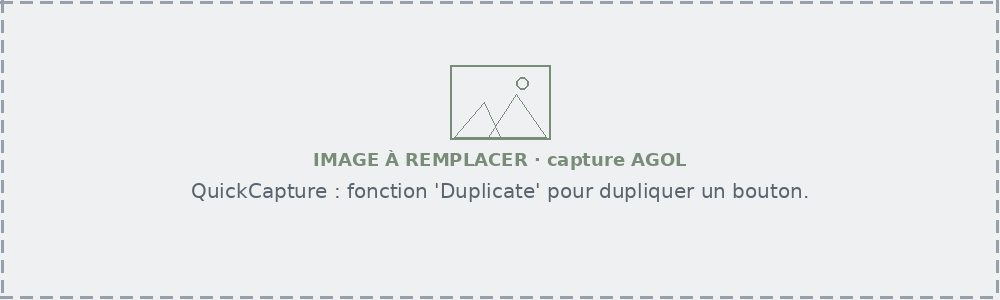
- Répéter pour créer un bouton « Épinette noire » et un bouton « Épinette blanche ».
D. Groupe « Chemin d’accès »
- Appearance — Label : « Appuyer pour commencer et arrêter la saisie du chemin » ; Colors : au choix ; Image : icône de sentier / tracé.
- Data — valider le Target feature layer ;
ID_placette: Project user inputs.
E. Groupe « Contour de la placette »
- Appearance — Label : « Appuyer pour commencer et arrêter la saisie du contour » ; Colors : au choix ; Image : icône de polygone / surface.
- Data — valider le Target feature layer ;
ID_placette: Project user inputs.
6) Sauvegarder et utiliser l’application
A. Sauvegarder le projet et définir les options de partage. B. Enregistrer le code QR si nécessaire. C. Ouvrir l’application QuickCapture sur votre appareil mobile, appuyer sur le + en bas de l’écran pour scanner le QR (ou sélectionner parmi vos applications QuickCapture associées à votre compte).
Partie 2 — Survey123 (Ex. 3b)
Fichiers nécessaires : Donnee_generale, Inv_forestier, et Base_donnee_EX1_EX3.xlsx.
1) À partir de votre compte ArcGIS Online
A. Ouvrir le lanceur d’applications (9 petits points) et lancer Survey123.
B. Dans ArcGIS Survey123, cliquer sur + New survey puis Blank survey.
C. Création du formulaire de base
- À l’ouverture de l’éditeur, remplir la section Survey info puis le header du formulaire. Choisir un nom pour le formulaire (Survey info = information affichée dans l’application mobile), puis un titre (affiché à l’ouverture de l’application).
- À l’aide du fichier
Base_donnee_EX1_EX3.xlsx(ongletsDonnee_generaleetInv_forestier), construire un formulaire à 2 groupes : 1. Le 1er groupe compile les données générales de la placette, incluant la coordonnée centrale. ⚠️ Important : portez une attention particulière aux champs demandés — Survey123 ne permet pas nécessairement de collecter exactement les mêmes données que QuickCapture. 2. Le 2e groupe compile les données d’inventaire des arbres hôtes de la TBE et doit comporter un menu déroulant / liste de choix pour les 3 espèces hôtes. 3. Types d’éléments impliqués : Date, Slider, Single line text, Single select / Dropdown, Map (usage non obligatoire). 4. Une fois complété, enregistrer puis publier le formulaire.
D. Tester le formulaire dans l’application.
Question 1 — Est-il possible de faire la collecte de plus d’un type de géométrie dans l’application ?
Question 2 — Qu’est-ce qui manque à notre formulaire pour réaliser un inventaire forestier complet ? Votre formulaire permet-il de compiler plusieurs données d’inventaire d’arbres, ou la saisie est-elle limitée à 1 arbre à la fois ?
E. Édition avancée du formulaire
- Sur votre ordinateur, ouvrir ArcGIS Survey123 Connect et y connecter votre compte.
- Télécharger le formulaire que vous venez de créer dans le Survey123 designer en ligne.
- Cliquer sur l’icône du formulaire pour en faire l’édition.
F. Fonctionnalités de ArcGIS Survey123 Connect
- Passer en revue les options du ruban inférieur (options du formulaire).
- Passer en revue les options du ruban gauche.
G. « One to many »
- Ajouter la fonction repeat dans le formulaire.
- Cliquer sur XLSForm.
.xlsx du formulaire).- À l’ouverture du fichier
.xlsx, visualiser la structure sous-jacente du formulaire (notamment l’onglet choices pour construire une liste — ajoutez une espèce de plus à la liste). - Dans l’onglet survey, insérer une nouvelle rangée sous la rangée
begin groupreliée au groupe Inventaire forestier. - Sous le champ type, choisir begin repeat (rangée 12 dans l’exemple) :
- name :
Repetition - label : « Saisir un arbre »
- name :
- Sous type, choisir end repeat (rangée 17 dans l’exemple).
- Sauvegarder et fermer le fichier
.xlsx. - Dans Survey123 Connect, appuyer sur Mettre à jour (Update).
- Retourner dans l’application mobile et mettre à jour l’application.
begin repeat / end repeat autour du groupe Inventaire forestier.Question 3 — Expliquez ce qui a changé dans l’application.
FIN !
Questions ?
Fin de l’atelier
Pour toutes questions sur vos projets de recherche, les professionnels de recherche du CEF sont là ! Voici le lien pour voir « qui fait quoi » : cef-cfr.ca — Professionnels de recherche.
Temps libre
Tester les applications et poser des questions !
Votre prochain défi
Intégrer vos données dans un ArcGIS Dashboard.
Synthèse
Séance d’information des outils ESRI — comparaison des fondamentaux (Survey123 / FieldMaps / QuickCapture).